---
{
"layout": "note",
"title": "ch2 Stress - part2 (σ, Cauchy stress tensor) , Equation of Motion",
"journal": true,
"section": "Study",
"topic": "Continuum Mechanics",
"excerpt": "ch2 Stress - part2 (σ, Cauchy stress tensor) , Equation of Motion 이번 시간에는 Cauchy stress tensor에 대해서 자세하게 분석해보자. 가장 간결하게 보여주는 그림은 다",
"classes": "wide",
"permalink": "/blog/mechanical-engineering/continuum-mechanics/ch2-stress-part2-cauchy-stress-tensor-equation-of-motion/",
"study_area": "Mechanical",
"date": "2025-02-02",
"source_url": "https://jeffdissel.tistory.com/m/162",
"header": {
"teaser": "/blog/mechanical-engineering/continuum-mechanics/ch2-stress-part2-cauchy-stress-tensor-equation-of-motion/images/img-001.png"
}
}
---
{% raw %}ch2 Stress - part2 (σ, Cauchy stress tensor) , Equation of Motion
이번 시간에는
Cauchy stress tensor에 대해서 자세하게
분석해보자.
가장 간결하게 보여주는 그림은 다음과 같다.
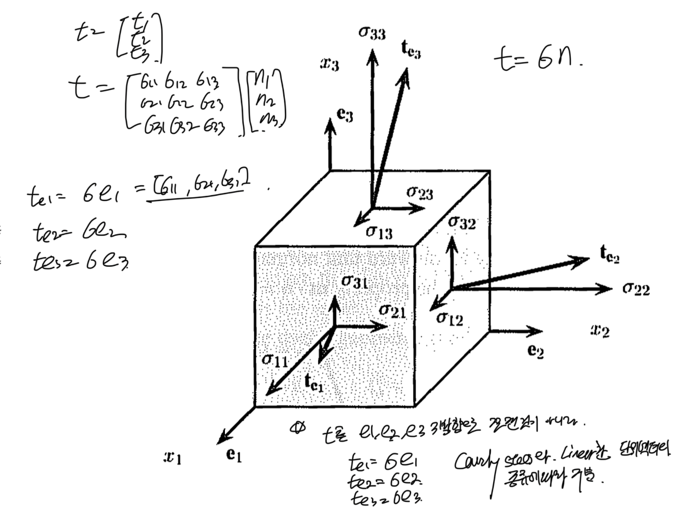
저는 이렇게 이해했습니다.
traction vector(t)라는 것이, 각 면마다 작용하는데,
벡터이므로
, 각 면에서도 3가지 성분으로 쪼갤 수 있다.
여기서 면과 수직인 성분 - normal stress
면과 평행한 성분 - shear stress
임을 고체역학 시간에 다루었을 것이다.
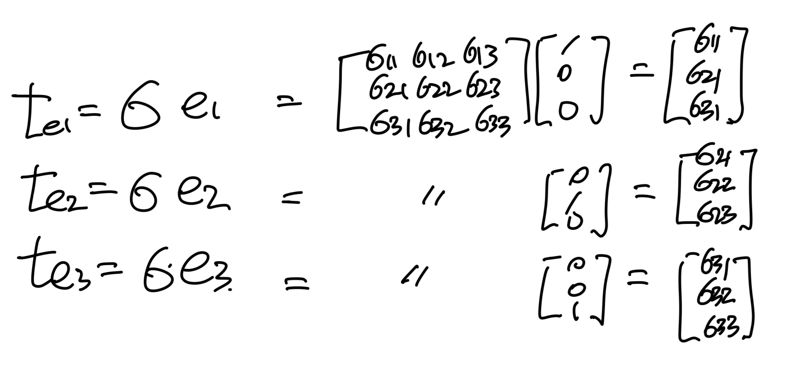
위를 보면 3가지 면의 total traction각각도 vector임을 알 수 있다.
여기서 stress tensor가 symmetric임을 증명해보자.
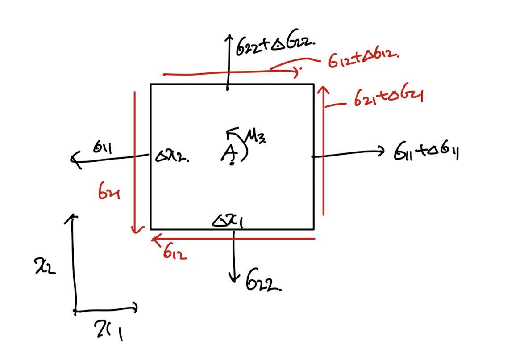
점 A를 기준으로 Moment를 계산해보자.
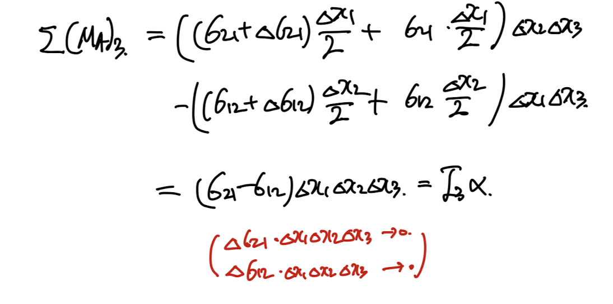
high order term -> 0 faster than the others.
관성모멘트도 High order term이므로, symmetrc함을 알 수 있다.
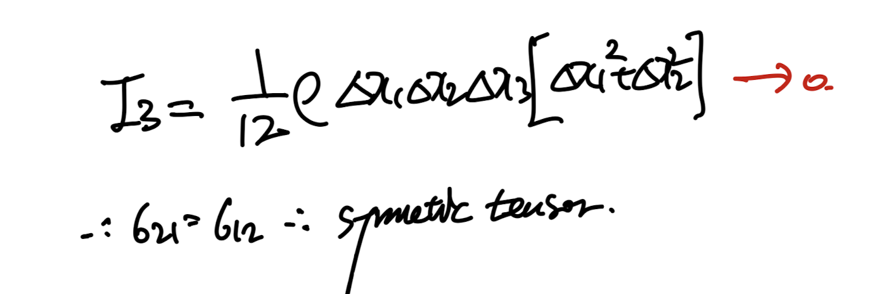
1,2방향외에 2,3/ 1,3 방향으로 분석시 똑같은 결과가 나옴을 알 수 있다.
아주 중요.
Cauchy stress tensor - symmetric Matrix.
symmetric인게 왜 중요한가???
Part3에서도 다루었지만,
symmetric인 경우, 고유벡터3개를
기저벡터(서로 수직)으로 만들 수 있다.
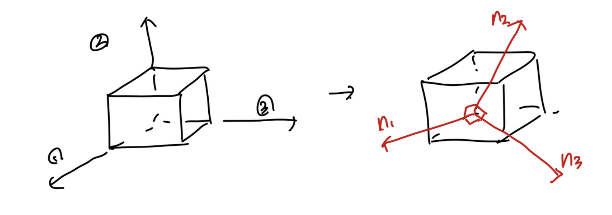
�
즉 좌표공간(새로운 기저벡터)로 변환시키면,
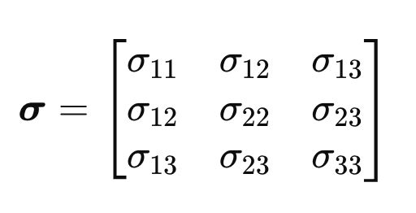
에서
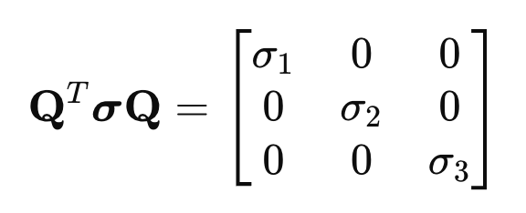
Q: 고유벡터로 이루어진 행렬,(대각화과정)
로 변환시킬 수 있다.
변환후의 stress값이 최대,최소값이고,
principal stress라고 칭한다.
즉, 우리는 물체에 작용하는 최대 최소 응력을 계산할 수 있게 된다.
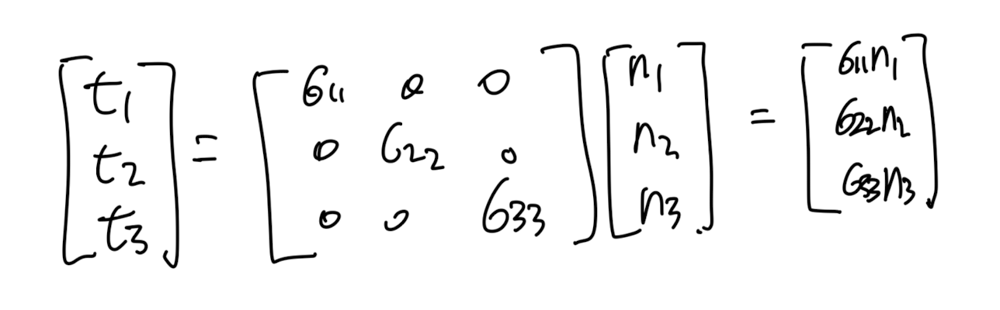
여기서 sigma 11,22,33은
위 행렬의 eigen value값이기 때문에,
3*3행렬의 eigen value를 구해보면, 다음과 같다.
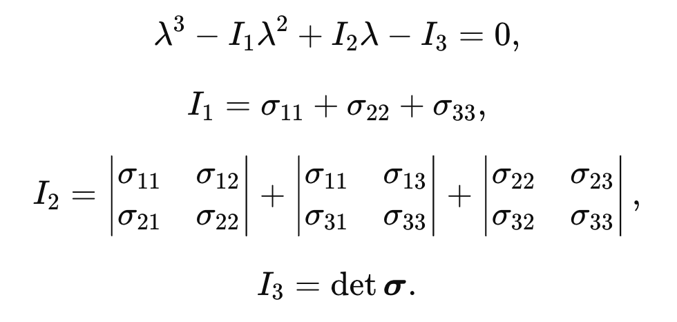
Equations of motion
위에서 정의한 코시 stress tensor를 가지고,
힘의 평형 방정식을 작성해보자.
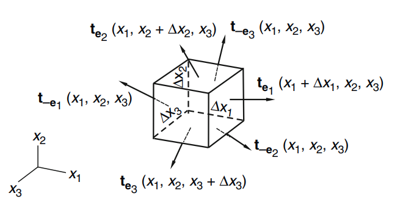
t: traction vector
힘의 평형식을 세워주면,
Surface force + body force = m * a
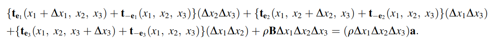
그리고 여기서, 우리는
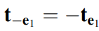
을 이용하여 좌항의 3성분들을 다음과 같이 변환할 수 있다.
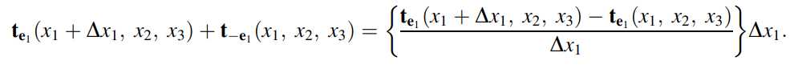
변환시킨 식을 대입후,
Δx1 Δx2 Δx3
를 좌항 우항 약분시켜주면 다음식이 유도된다.
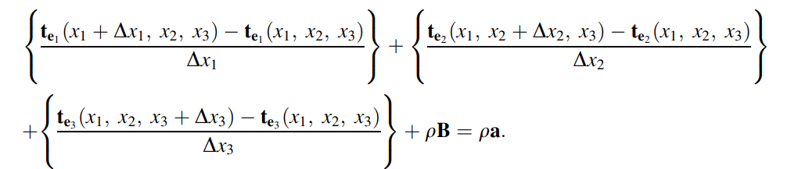
이후,
Δx -> 0 으로 수렴시키면 편미분 식으로 변환된다.
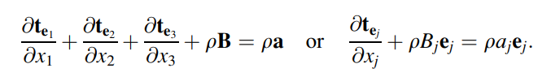
여기서 우리가 이전 포스터에서와 위에서 정의한
Cauchy stress tensor로 traction vector를 정의한 후,
식에 대입해주자.
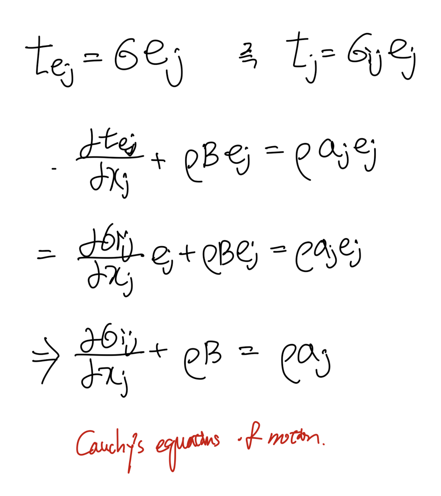
최종적으로,
Cauchy's Equation of motion
이 도출된다.
위 식에서, Cauchy stress tensor = 압력, 점성력 항으로 구성되면,
유체역학의 Navier's Stokes Equations이 유도됨을 알 수 있다.
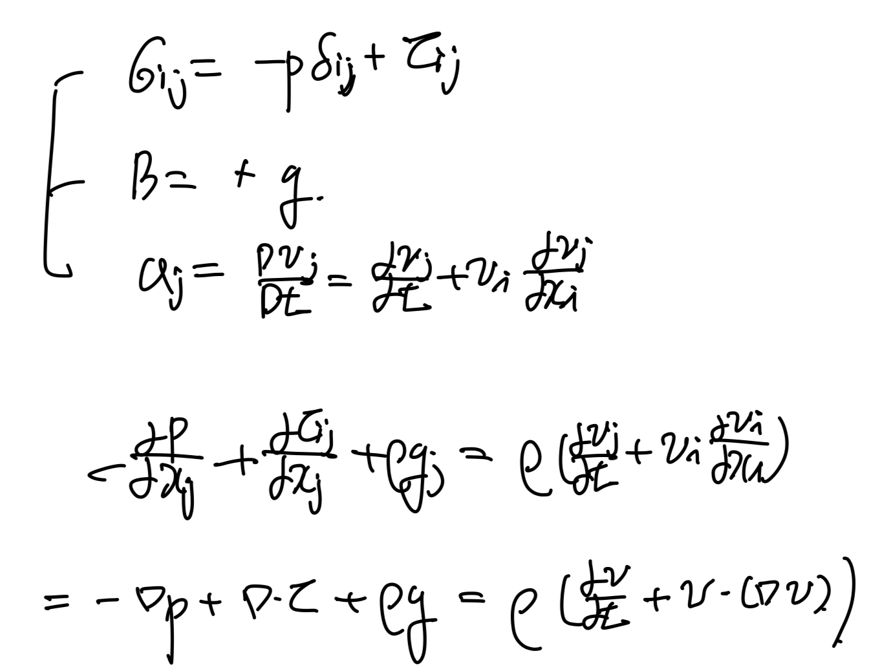
Navier's Stokes Equation.{% endraw %}